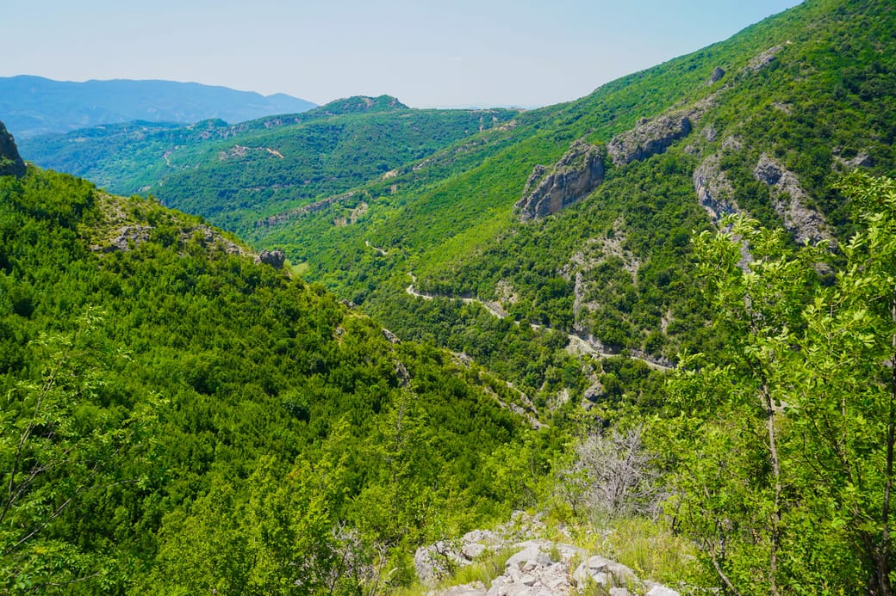
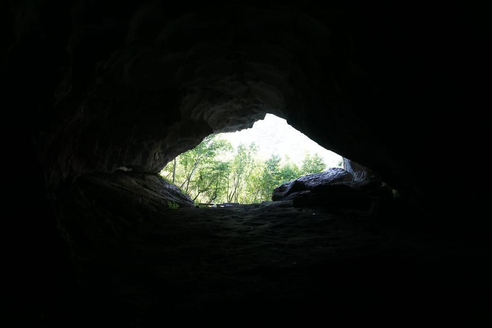

On my way from Tirana to Pogradec in central Albania, I heard about a cave in Pellumba. It was a 40 mins hike off the road, so I decided to venture out and explore the place.
It was 11AM when I left my bike and started following a stony path into the mountains. The sun dried the ground out and opened my pores to sweat. Each stripe of shade came as a relief as I advanced between the bushes. A large hole in the mountain facade appeared between the trees. Pellumba’s cave.

Impatiently I walked into the cave. The first few hundred meters came with a sharp drop in temperature. Within seconds I transitioned from the hot and lush surface of the earth to its the cold and silent interior.
The excavation extended into a mysterious dark hole. My eyes adjusted to the sinister environment. My shoes vacillated on the slippery mud. I shouted once “Oheee”. The echo lasted forever, but there was no response. As I creeped into the tunnel, an red warning sign reflected the only light left from the outside world. It was posted in front of meter deep hole in the way.
The beginning of Pellumba’s cave.
It didn’t take me long to realize that I wasn’t prepared for this undertaking. The cave I had in mind was small cliff with some cool waterfalls. My headlamp was on the bike, which was too far to go back to. But i decided to go with my phone light. “I didnt come all this way for nothing”. So off I wandered into the depths of the earth.
The feeling of loneliness came fast. Usually I feel comfortable on my own, but in a cave it’s different. I was transitioning from one world to the other, leaving the former far behind. The underworld is a different dominion with its own set of rules. With each step the natural light faded and I felt further away from the outside life. My smartphone couldn’t light more than 3 meters ahead. As I waded through the cool earth and stone, I watched out for possible abyssal caveholes. I looked back one last time : the last glim of light from the entrance disappeared behind the stones. I was now truly alone.
A white reflective band led further into the cave. Some reassuring footsteps marked the way around it. The knowledge that other people have been here before me was perhaps the only thing that prevented me from turning back.
So I walked for 20 minutes and got deeper into the cave. Here and there, my dim lamp exposed underground columns and stalagmites. The cold, unmoving air enveloped me like transparent hands. I looked back on the way I came from. Would I find my way back ?
Cave formations
As I ventured further, some rustling noise started to cover the cave dripping. I set foot in a in a room that was so large i couldn’t see its walls. The noise became more pronounced. Was it water? Clearly not. Could it be an animal ? It seemed to come from the whole room at once. I walked further into the cavity and realised the now obtrusive rustling noise came from the roof. The ceiling was covered with bats ! Thousands of bats ! I held my breath and a moment of panic took me. What if they rush down on me? They had an overwhelming numerical advantage. This hordes of vampires were in their element, and i was an intruder in their dominion. But I calmed myself down. “I never heard of anyone getting attacked by bats”, I thought. Slowly I continued, eyeballing them after every step to check if I didn’t upset anyone.
It seemed that I had reached the bottom of the came. I haven’t seen the white reflective band for some time, I thought. What if… wait. What if my smartphone fails me now? I wouldn’t find my way out! An cold shiver ran over my body. I stared at my phone. 30% battery. “Of all the moments, now is the time not to fail. You have served me well until now.. Just don’t die NOW, ok?”. I felt helpless as my fate now relied on that piece of electronics . Let’s get out of here, I thought. It was a visceral experience of a truth we often forget : man’s dependence on technology. So I started to walk back to the entrance of the cave. As I came closer to the entrance I felt my anxiety release.
But I decided to play one last mindgame. I felt safe enough to experience complete loneliness in the in the dark. So I turned my phone off. It took 30 seconds for the eyes to accommodate. It was darker than the darkest night. My eyes and mind tried desperatly to grasp on to something . But there was not the faintest shade to hold on to. My brain was simply not used to cope with complete darkness in open eyes. Is this what sensory deprivation tanks feel like ? Maybe, with the difference that you can’t open the lid to get out of the cave. The intermittent drips in the cavity were the only reassurance that I was still alive. I turned around a few times. At once, I distinguished a faint shade of grey which seemed to prevail in the dark. Was it an illusion? I turned my phone back on and walked towards it. It was the furthest and faintest imprint of sunlight into cave. I followed the light at the end of the tunnel, as if I was coming back from beyond.
